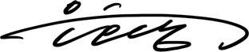

상차림 기록
밝기
밝은 화면
눌러서 바꾸거나, 유리를 천천히 끌어보세요.
두 상태와 투명 배경 확인
배경이 유리를 통해 이어지는지 비교하는 정지 예시입니다.
밝은 화면
어두운 화면
이 버전은 원본과 같은 구조의 WebGL 조각 셰이더입니다. 둥근 사각 유리, 색 번짐, 도는 빛 띠, 달에서 해로 흩어지는 픽셀입니다. 그 사람 셰이더 파일을 복사한 것은 아닙니다.

상차림 기록
밝은 화면
눌러서 바꾸거나, 유리를 천천히 끌어보세요.
배경이 유리를 통해 이어지는지 비교하는 정지 예시입니다.
이 버전은 원본과 같은 구조의 WebGL 조각 셰이더입니다. 둥근 사각 유리, 색 번짐, 도는 빛 띠, 달에서 해로 흩어지는 픽셀입니다. 그 사람 셰이더 파일을 복사한 것은 아닙니다.